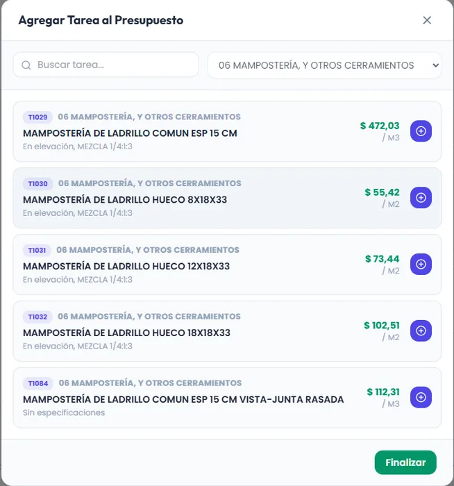
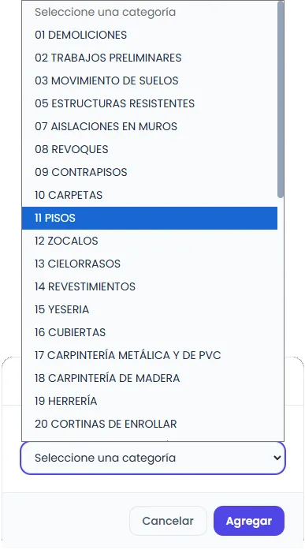
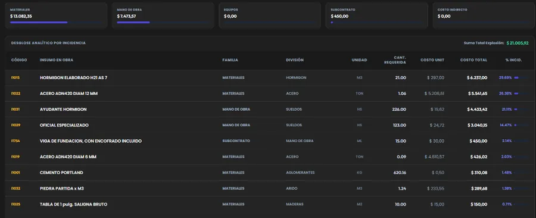

SIGO — Sistema Integral de Gestión de Obras
Plataforma web de ingeniería de costos y presupuestación para obras de edificación. Su primer entregable reemplaza las planillas de cálculo tradicionales por un motor de cómputo métrico estructurado, análisis de precios unitarios (APU) en tiempo real y persistencia resiliente.
El Desafío & Objetivo
Superar la dispersión, pérdida de versiones y fragilidad de fórmulas inherentes a las hojas de cálculo tradicionales en la presupuestación de obras. El objetivo fue consolidar un catálogo maestro de rubros, tareas e insumos en una plataforma web ultraliviana que permita estimar costos con rapidez y total rigor metodológico.
Metodología Chandías & Carga Simplificada
Siguiendo los estándares de estimación para edificación, los trabajos se organizan en una jerarquía estricta:
-
Desglose Jerárquico: Los trabajos de los diferentes Rubros se encuadran en Tareas, y cada tarea se descompone en sus insumos (Materiales, Mano de Obra, Equipos) y subtareas con rendimientos precalculados.
-
Carga Ágil en Obra: El usuario solo ingresa la cantidad según la unidad de medida (m², m³, ml, u). Los insumos y rendimientos ya están asignados, eliminando tiempos muertos de cálculo manual.
-
Cascada de Recálculo en Vivo: Cualquier variación de costo en un insumo repercute instantáneamente en la APU, las tareas del presupuesto y la explosión porcentual global.
-
Preparado para EDT y Cronogramas: La estructura relacional de tareas permite alimentar a futuro una Estructura de Desglose del Trabajo (EDT/WBS) y generar diagramas de avance temporal y curvas de inversión.
Capturas del Sistema en Producción
Interfaz optimizada para cómputos rápidos, selección de rubros y análisis de costos unitarios.

Presupuesto & APU

Clasificación por Rubros

Explosión de Insumos (Dark Mode)